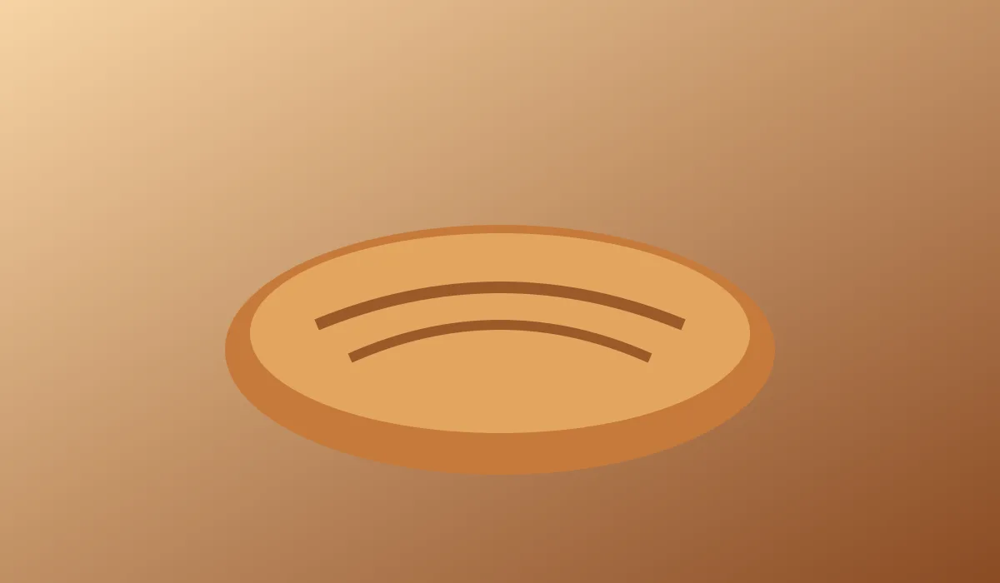

Bread worth waking up for.
Sourdough, rye and morning buns, baked before sunrise and gone by noon.
Plan a visitWatch the oven
Order code
Use LOAF7 at the counter.

Sourdough, rye and morning buns, baked before sunrise and gone by noon.
Plan a visitUse LOAF7 at the counter.